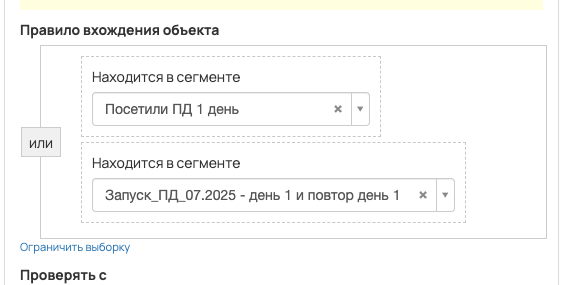
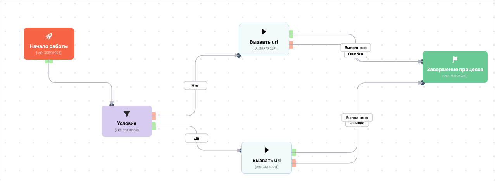

[AMO] Автовебинар "Пассивный доход 1.0" - Занятие 1
- ID процесса:
2072907 - Объект: Пользователи
- Статус: Ожидание событий
- Внутренняя страница: 2072907. [AMO] Автовебинар "Пассивный доход 1.0" - Занятие 1
- GetCourse: Карточка | Схема процесса
Скриншоты процесса


Коротко для заказчика
- Главное: В процесс попадают пользователи из выбранных сегментов GetCourse: 33723824, 33789271.
- Дальше он передает данные как: Пользователи и визиты.
- Связанных баз Vakas: 1.
Понятное описание процесса
- Процесс работает с объектом GetCourse: Пользователи. Текущий статус процесса: Ожидание событий.
- На вход попадают данные так: В процесс попадают пользователи из выбранных сегментов GetCourse: 33723824, 33789271.
- Техническое правило входа в GetCourse: Находится в сегменте или Находится в сегменте.
- Внутри схемы есть дополнительные проверки/ожидания: 5. Основные блоки: «Условие»; «[timeline_web] under_30?»; «[timeline_web] 30_60?»; «[timeline_web] 60_90?»; «[timeline_web] over_90?».
- Дальше процесс делает прямые вызовы Vakas: 2. Напрямую задействованы базы: 76260.
- Передача: 76260. База 76260: Пользователи и визиты. Передаются параметры:
name,email,phone,getcourse_user_id,p1,comments,timeline_web. - Передача: 76260. База 76260: Пользователи и визиты. Передаются параметры:
name,email,phone,getcourse_user_id,p1,p2,p3,user_tag,comments,timeline_web. - Что происходит в amoCRM: На входе в этап ОТДЕЛ - ДОВЕДЕНИЯ -> ПОСМОТРЕЛИ ВЕБИНАР 1 [57387586] база ищет дубль и при необходимости переводит найденную сделку в рабочий этап.
Ход процесса в GetCourse
- Схема состоит из 18 блоков и 28 переходов.
- По типам: стартов 1, условий/ожиданий 5, вызовов URL 6, изменений полей 4, финалов 1.
Блоки процесса: что делают и зачем нужны:
- Блок
35892923«Начало работы» (старт). Что делает: Запускает выполнение схемы для объекта, который попал под правило входа процесса. Зачем нужен: Нужен как точка входа: от него GetCourse начинает движение объекта по схеме. Дальше: если результат «Выполнено», идет в «[timeline_web] under_30?». - Блок
43645914«[timeline_web] under_30?» (условие). Что делает: Проверяет ветвление «[timeline_web] under_30?», но текст условия в дампе не расшифрован. Зачем нужен: Нужен, чтобы разделить поток: подходящих пользователей/заказы отправить дальше, неподходящих перевести на другую ветку или завершить. Дальше: если результат «Нет», идет в «[timeline_web] 30_60?»; если результат «Да», идет в «[timeline_web] set under_30». - Блок
43645915«[timeline_web] set under_30» (изменение поля). Что делает: меняет полеtimeline_web(Установить равным). значение: under_30 Зачем нужен: Нужен, чтобы записать внутри GetCourse технический признак/значение, которое потом используется в передаче или логике ветвления. Дальше: если результат «Выполнено», идет в «Условие». - Блок
36130162«Условие» (условие). Что делает: Проверяет условие: Находится в сегменте. Зачем нужен: Нужен, чтобы разделить поток: подходящих пользователей/заказы отправить дальше, неподходящих перевести на другую ветку или завершить. Дальше: если результат «Нет», идет в «Вызвать url»; если результат «Да», идет в «Вызвать url». - Блок
36130211«Вызвать url» (вызов URL). Что делает: Передает в Vakas: 76260. База 76260, канал «Пользователи и визиты» (GET); параметры:name,email,phone,getcourse_user_id,p1,p2,p3,user_tag,comments,timeline_web; timeout 300 сек. Зачем нужен: Нужен, чтобы передать подходящий объект в 76260. База 76260; дальше На входе в этап ОТДЕЛ - ДОВЕДЕНИЯ -> ПОСМОТРЕЛИ ВЕБИНАР 1 [57387586] база ищет дубль и при необходимости переводит найденную сделку в рабочий этап. Дальше: если результат «Ошибка», идет в «n8n fail после Вызвать url #36130211»; если результат «Выполнено», идет в «n8n success после Вызвать url #36130211». - Блок
43527779«n8n success после Вызвать url #36130211» (вызов URL). Что делает: Пишет событие в n8n: success, action vakas_users (POST); параметры:event,clientED,gcDomain,action,process_id,process_name,entity_type,object_id,user_id,name,email,phone,error_message; timeout 10 сек. Зачем нужен: Нужен для фиксации успешной отправки: n8n получает событие, что Vakas-вызов отработал без ошибки. Дальше: если результат «Ошибка», идет в «Завершение процесса»; если результат «Выполнено», идет в «Завершение процесса». - Блок
35893246«Завершение процесса» (завершение). Что делает: Завершает ветку процесса после выполненных проверок и действий. Зачем нужен: Нужен, чтобы закрыть текущую ветку и не гонять объект по процессу повторно. Дальше переходов нет: это конечная точка ветки. - Блок
43527782«n8n fail после Вызвать url #36130211» (вызов URL). Что делает: Пишет событие в n8n: fail, action vakas_users (POST); параметры:event,clientED,gcDomain,action,process_id,process_name,entity_type,object_id,user_id,name,email,phone,error_message; timeout 10 сек. Зачем нужен: Нужен для контроля ошибки: n8n получает данные неуспешной отправки, чтобы можно было увидеть проблему и повторить/разобрать передачу. Дальше: если результат «Ошибка», идет в «Условие»; если результат «Выполнено», идет в «Условие». - Блок
35893245«Вызвать url» (вызов URL). Что делает: Передает в Vakas: 76260. База 76260, канал «Пользователи и визиты» (GET); параметры:name,email,phone,getcourse_user_id,p1,comments,timeline_web; timeout 300 сек. Зачем нужен: Нужен, чтобы передать подходящий объект в 76260. База 76260; дальше На входе в этап ОТДЕЛ - ДОВЕДЕНИЯ -> ПОСМОТРЕЛИ ВЕБИНАР 1 [57387586] база ищет дубль и при необходимости переводит найденную сделку в рабочий этап. Дальше: если результат «Ошибка», идет в «n8n fail после Вызвать url #35893245»; если результат «Выполнено», идет в «n8n success после Вызвать url #35893245». - Блок
43527773«n8n success после Вызвать url #35893245» (вызов URL). Что делает: Пишет событие в n8n: success, action vakas_users (POST); параметры:event,clientED,gcDomain,action,process_id,process_name,entity_type,object_id,user_id,name,email,phone,error_message; timeout 10 сек. Зачем нужен: Нужен для фиксации успешной отправки: n8n получает событие, что Vakas-вызов отработал без ошибки. Дальше: если результат «Ошибка», идет в «Завершение процесса»; если результат «Выполнено», идет в «Завершение процесса». - Блок
43527776«n8n fail после Вызвать url #35893245» (вызов URL). Что делает: Пишет событие в n8n: fail, action vakas_users (POST); параметры:event,clientED,gcDomain,action,process_id,process_name,entity_type,object_id,user_id,name,email,phone,error_message; timeout 10 сек. Зачем нужен: Нужен для контроля ошибки: n8n получает данные неуспешной отправки, чтобы можно было увидеть проблему и повторить/разобрать передачу. Дальше: если результат «Ошибка», идет в «Условие»; если результат «Выполнено», идет в «Условие». - Блок
43645916«[timeline_web] 30_60?» (условие). Что делает: Проверяет ветвление «[timeline_web] 30_60?», но текст условия в дампе не расшифрован. Зачем нужен: Нужен, чтобы разделить поток: подходящих пользователей/заказы отправить дальше, неподходящих перевести на другую ветку или завершить. Дальше: если результат «Нет», идет в «[timeline_web] 60_90?»; если результат «Да», идет в «[timeline_web] set 30_60». - Блок
43645917«[timeline_web] set 30_60» (изменение поля). Что делает: меняет полеtimeline_web(Установить равным). значение: 30_60 Зачем нужен: Нужен, чтобы записать внутри GetCourse технический признак/значение, которое потом используется в передаче или логике ветвления. Дальше: если результат «Выполнено», идет в «Условие». - Блок
43645918«[timeline_web] 60_90?» (условие). Что делает: Проверяет ветвление «[timeline_web] 60_90?», но текст условия в дампе не расшифрован. Зачем нужен: Нужен, чтобы разделить поток: подходящих пользователей/заказы отправить дальше, неподходящих перевести на другую ветку или завершить. Дальше: если результат «Нет», идет в «[timeline_web] over_90?»; если результат «Да», идет в «[timeline_web] set 60_90». - Блок
43645919«[timeline_web] set 60_90» (изменение поля). Что делает: меняет полеtimeline_web(Установить равным). значение: 60_90 Зачем нужен: Нужен, чтобы записать внутри GetCourse технический признак/значение, которое потом используется в передаче или логике ветвления. Дальше: если результат «Выполнено», идет в «Условие». - Блок
43645920«[timeline_web] over_90?» (условие). Что делает: Проверяет ветвление «[timeline_web] over_90?», но текст условия в дампе не расшифрован. Зачем нужен: Нужен, чтобы разделить поток: подходящих пользователей/заказы отправить дальше, неподходящих перевести на другую ветку или завершить. Дальше: если результат «Нет», идет в «Условие»; если результат «Да», идет в «[timeline_web] set over_90». - Блок
43645921«[timeline_web] set over_90» (изменение поля). Что делает: меняет полеtimeline_web(Установить равным). значение: over_90 Зачем нужен: Нужен, чтобы записать внутри GetCourse технический признак/значение, которое потом используется в передаче или логике ветвления. Дальше: если результат «Выполнено», идет в «Условие». - Блок
43433889«Уведомить сотрудника» (операция notify_manager_operation). Что делает: Выполняет служебный шаг схемы «Уведомить сотрудника». Зачем нужен: Нужен как промежуточный технический шаг в схеме «Уведомить сотрудника». Дальше: если результат «Выполнено», идет в «Завершение процесса».
Что именно входит в процесс
- В процесс попадают пользователи из выбранных сегментов GetCourse: 33723824, 33789271.
Как именно настроено правило
- Техническое правило входа в GetCourse: Находится в сегменте или Находится в сегменте.
Куда и как передается дальше
| База Vakas | Что передается | Этап в amoCRM | Что происходит со сделкой |
|---|---|---|---|
| 76260. База 76260 | Пользователи и визиты | ОТДЕЛ - ДОВЕДЕНИЯ -> ПОСМОТРЕЛИ ВЕБИНАР 1 [57387586] | На входе в этап ОТДЕЛ - ДОВЕДЕНИЯ -> ПОСМОТРЕЛИ ВЕБИНАР 1 [57387586] база ищет дубль и при необходимости переводит найденную сделку в рабочий этап. |